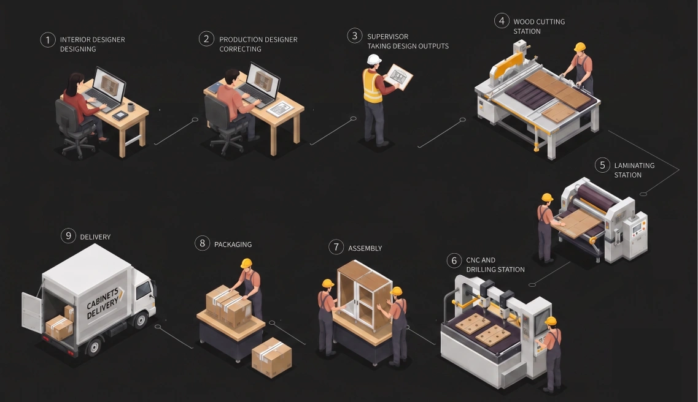

Manufacturing Execution System
A 0→1 product for modular furniture factory workflows.

Lokesh Kumar V MIllustration: simplified cabinetry workflow (AI-generated)
Product brief
Factories ran production on spreadsheets, WhatsApp and paper.
Nothing connected the interior CAD design to the factory floor, and the disconnected workflow delayed deliveries. That gave Infurnia a big opening.
I designed a 0→1 Manufacturing Execution System that covers the whole process, from interior CAD design to furniture ready for delivery: digitisation, communication and tracking across the factory.

The key insight
Two designers, two different jobs

Interior designer: the look & feel
- Appearance, size and uses of each cabinet
- Sells the design to the people buying it
- Unconcerned with factory details

Production designer: manufacturability
- Cabinet construction, hardware, drilling and CNC
- Deals with carpenters and the shop floor
- Materials procurement and hardware lists
Until MES, both of them worked in the same design portal.
Inside the factory floor
Who uses this system


The whole ecosystem, from design to assembly

Click to enlarge
Solution 1

Designing for the production designer
Sanjay · 35 · Diploma in product design · Keen on details, tech savvy
Pain points
- Units are scattered across the design file, hard to check one by one
- Remembering which units are verified
- Editing takes a lot of clicks & juggling in the design app
- Frequent interior design changes
Needs
- Create & manage multiple work orders
- Verify, edit & sign off to production
- Easy coordination with manufacturing and the interior designer
User flow
WCAG 2.1 AA minimum
Designing for everyone
MES is a B2B tool for sighted professionals, so full screen-reader coverage wasn’t the goal. We designed for situational limits instead: glare, one-handed use and low vision.
- Works in greyscale: status uses icons and text, not colour alone
- Keyboard first: every option reachable, most important element first, clear focus state
- Contrast: 10.31:1 for 95% of text; 5.07:1 at its lowest, still AA
- Alt text coded from SKU names, since every image comes from a SKU
- Large targets: the smallest button is 32px


Getting into the factory
Factory visits
- A pilot interview online with 4 users, using a basic questionnaire
- Visited the Wakefit factory in Hosur and 3 local factories in Bangalore
- Watched workflows in person, touchpoint by touchpoint

Interviews & affinity
- 5 interviews with internal customer success reps, our user proxies
- Two focus groups: 8 and 7 participants from across the factory
- I transcribed the sessions and did affinity mapping

Meet the users

Sanjay
Production designer · 35 · Delhi
“I make sure any designed cabinet can be manufactured easily.”
Tools: cut list optimiser, saw / CNC, Google Sheets, CAD

Ramesh
Production manager · 40 · Delhi
“I focus on quality and timely delivery of modular furniture to my clients.”
Tools: Google Sheets, accounting software, project planners

Ajay
Floor worker · 40 · Delhi
“I bring life to cabinets, from wooden sheets to furniture in your house.”
Tools: factory machines, hand tools, drawings, walkie-talkie
Prioritising user needs
The product was large, so I classified user needs to decide what to build first.

Shaping the solution with stakeholders
- Combined brainstorming, then ideation in my own focus time
- Tested wireframes often with the in-house customer success team
- Frequent design discussions with the CTO and PM
- Card sorting to find the right information architecture
- Released the first version to staging for beta testing, and fed the results into the next releases

Wireframes and wireflows


Click any image to enlarge
Information architecture
Several rounds of closed card sorting with 8 users settled the structure.

Bringing it to life
Visual design
MES users need a clean, simple UI, and our design system was built for the design portal. I used the Material Tailwind design system with a few tweaks: minimal, free to customise, and fast to ship.

Prototyping
Prototypes were tested with customer success reps and users. The first version then went to staging for beta testing, and every round fed the next iteration.

Working with the team
Stakeholder collaboration

Developer sign-off


Challenge
The hardest problem: a conflict after design freeze
- It came after the design walkthrough and design freeze
- A developer hit a problem implementing the design
- He asked me to remove either the 2D or the 3D viewport
- Showing both wouldn’t be feasible for a few months
Proposed design: the cabinet in detail, plus all panel info at once

Challenge
How I resolved it

Putting it to the test
Path analysis in Mixpanel
Every event was logged, so I checked task flows and drop-offs for work order creation, publishing, bulk editing SKU structure and downloading CNC & board layouts.
Think-aloud & retrospective testing
With 5 customer success executives and 5 users in the factory, across four jobs to be done:
- A. Create a work order from a design file
- B. Make 5 units ready for production
- C. Check work order progress in detail
- D. Cut boards with assisted sawing

Did it work?
What success looks like

Work orders created from designs
Tracks adoption of MES

Panels & units added to production
Tracks revenue, since we charge per panel

Outputs downloaded
Shows the system is in use

Panels tracked or scanned
Shows operators are working on the panels
All events are logged in Mixpanel.
Growth over the first 6 months
Panels added
+2251%: 40.6K to 954.4K

Panels added per user
0 to 20.33 (all design clients counted as users)

Outputs downloaded
Board layouts and CNC files

Tracking in use
Panel cutting, CNC, edge banding, packaging

The business case
First week vs. 6 months after release.

Source: Infurnia Mixpanel. *Revenue shown only for the panel processing fee; the MES add-on fee isn’t included.